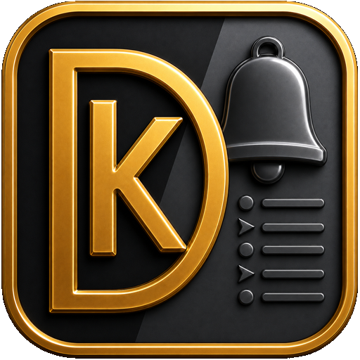
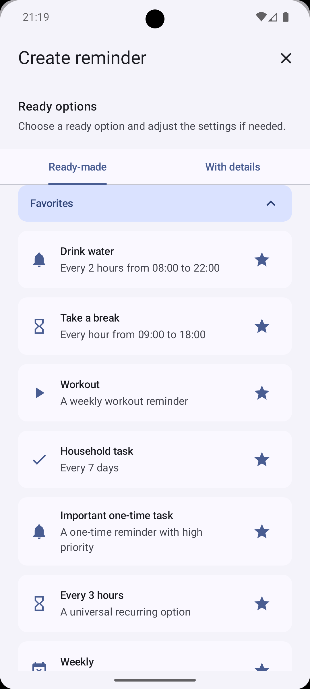
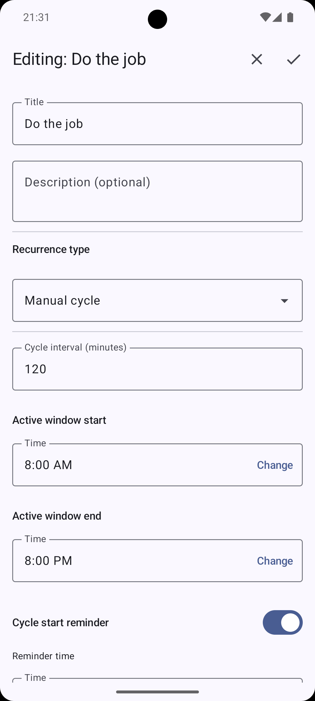
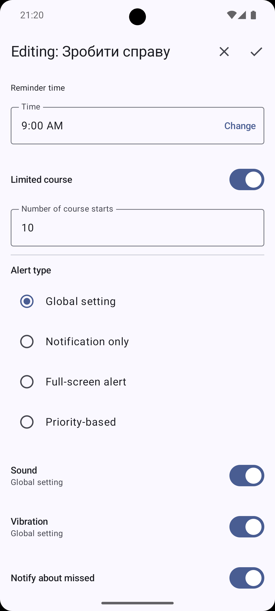
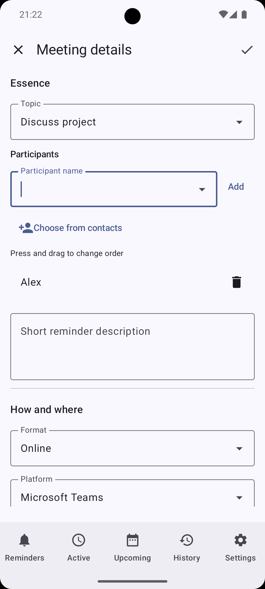
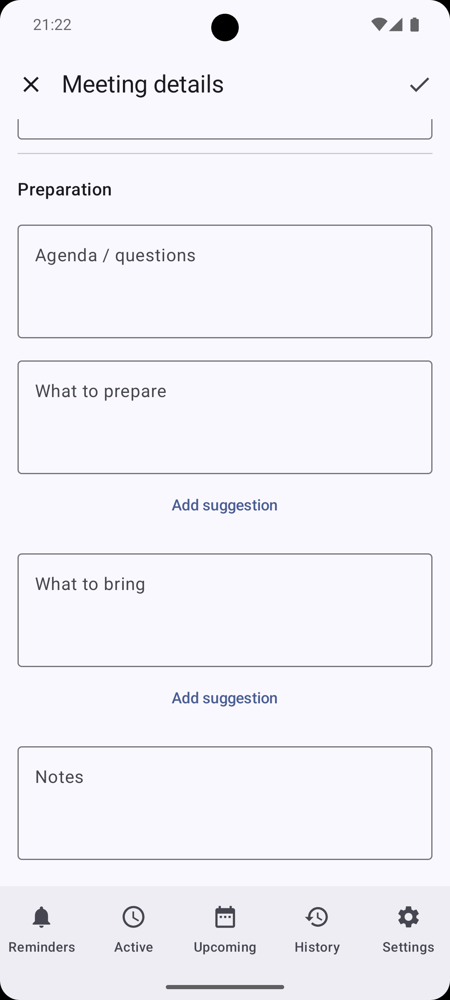
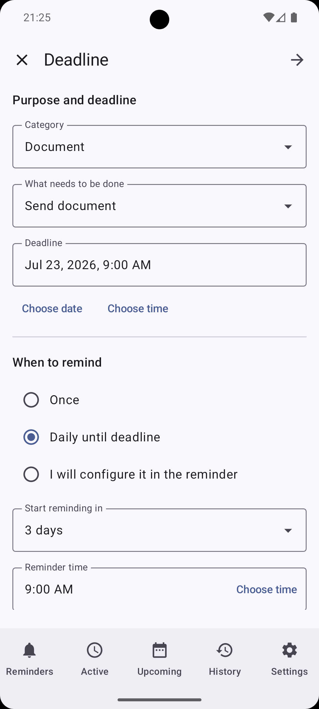
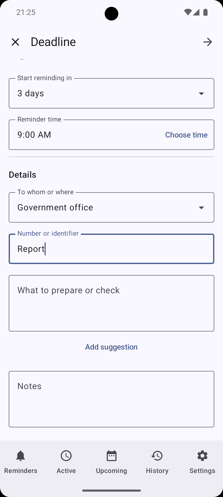

By schedule
12:0015:0018:00
Snooze a reminder for 15 minutes — the next reminder stays at its usual time.
DKReminder — reminder manager
Choose ready-made options, set flexible recurrence, and keep the details of your tasks close — so you can return to them at the right moment.

Get started easily
Choose an option for everyday tasks: water, breaks, home, documents, workouts, or important events. Change the title, time, and recurrence to suit you — you stay in control before saving.
Dozens of ready-made options for everyday tasks.

Your rhythm
For recurring tasks, choose a clear way to count time: by schedule or from the moment you completed the previous action.
Snooze a reminder for 15 minutes — the next reminder stays at its usual time.
Complete an action at 12:15 — the next interval begins from 12:15.
Snooze, complete, review history, and receive a summary of missed reminders when you need one.


Start when it works for you
DKReminder reminds you to start the manual cycle. Begin whenever it works for you, and each following occurrence is scheduled from the actual start time within the active window.
Start a cycle at 9:30 with a two-hour interval, and the next reminders arrive at 11:30, 13:30, and so on within the active window.
When more than time matters
For a meeting or deadline, gather the details you need in one place, then return to them at the right moment.
Participants, format, online platform, questions, and preparation — everything worth having before the conversation.


The due date, when to remind you, who to contact, and what to prepare or check.


Privacy
DKReminder does not require an account, does not send reminders to developer-operated servers, and does not include advertising or analytics SDKs.
Add important things to your reminder system now — and return to them when they truly matter.